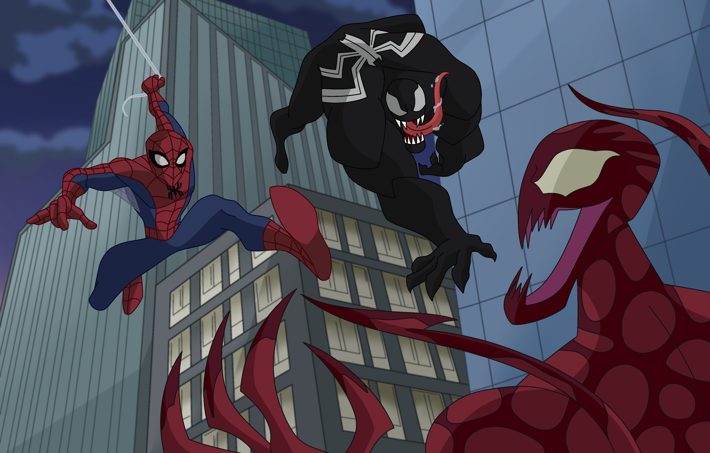

El Asedio de los Enmascarados: Spiderman, Venom y Carnage Desatan el Caos en Nueva York
Por J. Jonah Jameson
Nueva York, 10 de abril de 2024
¡Atención, ciudadanos de Nueva York! En un giro preocupante de los eventos, las calles de nuestra querida ciudad se han convertido en el escenario de una batalla épica entre tres figuras enmascaradas, que amenazan con sumirnos en el caos y la destrucción. En este momento crítico, es crucial que permanezcamos alerta y nos preparemos para enfrentar la amenaza que se cierne sobre nosotros.
Spiderman, el enmascarado que ha sido objeto de demasiada atención últimamente, ha sido arrastrado una vez más al centro de este conflicto. Como siempre, mis opiniones sobre Spiderman no han cambiado; considero que su presencia en nuestra ciudad solo sirve para atraer problemas y poner en peligro a los ciudadanos inocentes. Sin embargo, esta vez, la situación es más grave que nunca. A su lado, encontramos a Venom y Carnage, dos entidades monstruosas que han elegido nuestra ciudad como su campo de batalla. Estas criaturas, cuyo único propósito parece ser la destrucción indiscriminada, representan una amenaza inminente para la seguridad y el bienestar de todos los neoyorquinos. Es imperativo que actuemos con rapidez y determinación para detener su avance antes de que sea demasiado tarde. Mientras las calles retumban con el estruendo de la batalla y los edificios tiemblan bajo el peso de la destrucción, no podemos ignorar la magnitud de la amenaza que enfrentamos. Las vidas de miles de neoyorquinos están en juego, y es responsabilidad de todos nosotros unirnos y enfrentar esta crisis con valentía y determinación. El Daily Bugle seguirá informando sobre esta situación en desarrollo y proporcionará a los ciudadanos de Nueva York actualizaciones en tiempo real sobre los eventos que se desarrollen. Pero recuerden, en tiempos de crisis, es crucial que permanezcamos unidos y demostramos que la ciudad de Nueva York no se doblegará ante ninguna amenaza, sin importar cuán formidable parezca.
J. Jonah Jameson - Editor en Jefe, Daily Bugle